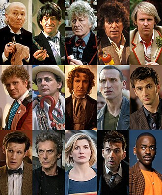

The Doctor is a renegade Time Lord from Gallifrey whose title of "doctor" embodied their promise to the universe. Throughout their travels, the Doctor has adventured alongside numerous companions in an obsolete and "borrowed" Type 40 TARDIS. They are "the universe's greatest defender", having saved the cosmos thousands of times across a long life, becoming both a legend throughout the universe, and a complicated space-time event of unparalleled complexity.
